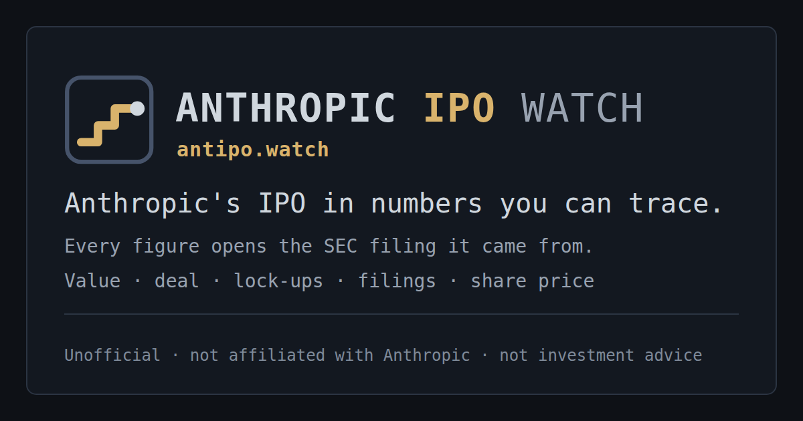
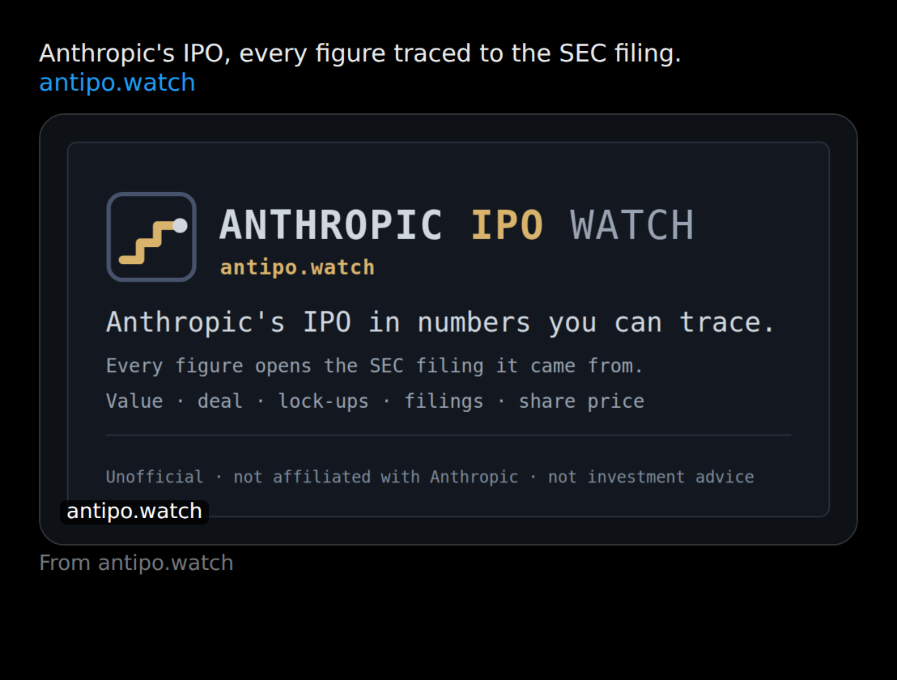

Loop 006 — A share card for X
2026-11-17 · Before the first post on X, a link to antipo.watch now shows a large card: the project's mark, the name Anthropic IPO Watch, one line on what the page does, and the notices. No figure in the image, so it never goes stale. Version 0.6.2.
Why
The home page of antipo.watch has no Open Graph or twitter:card tags (checked as Twitterbot). Add og:title, og:description, og:url, og:image (a 1200×630 image without unsourced figures) and twitter:card=summary_large_image, then check the preview before I post.
The request came from the X research session and was passed on by the owner, who then said: go. The owner's words are reworded in English.
What changed


- Tags: Open Graph (type, site name, title, description, address, image with its size and description) and
twitter:cardset tosummary_large_image; a canonical address, so search engines and previews prefer antipo.watch to the Fly.io address. - One place for the words: the name, the title, the description and the address live in
render.py; the page reads them. The tab now says Anthropic IPO Watch; the header follows in the branding loop. - No figure in the image: X keeps a card for days, and a price range would be false after pricing. A test reads the image's text and fails on any digit.
Checks
| Check | Result | Evidence |
|---|---|---|
| Unit tests, lint, types, secret scan | passed | Two new tests: the tags and the image (PNG, 1200×630, under 5 MB); no digit in the image's text. |
| Real-browser tests, local and against antipo.watch | passed | 14 and 14, after the title check took the new name. |
| CI and CodeQL | passed | Commit 7113899, tag v0.6.2. |
| As Twitterbot, through Cloudflare | passed | Every tag present, absolute https://antipo.watch addresses; the image answers 200, image/png, 1200×630, 62 KB. Cloudflare serves its own robots.txt, with no rule that blocks anyone. |
| The card in X's composer | not_run | Only the owner can paste the link, without posting. |